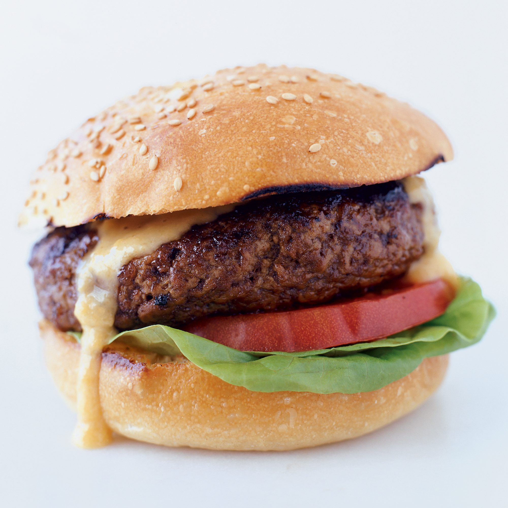

Classic Beef Burger

Description
Many restaurants claim to be the birthplace of the hamburger. Louis' Lunch, in New Haven, Connecticut, is a leading contender. Since 1900, the Lassen family has been grinding its beef daily, hand-shaping the patties to order and grilling the burgers in antique cast-iron broilers over an open flame. The ground beef formula uses five different parts of the chuck; a combination of chuck and sirloin makes a similarly meaty, juicy burger. The Louis' Lunch classic is topped with just onion and tomato, though the Lassens do offer a Cheddar cheese sauce. The version of that sauce here is spiked with beer
Ingredients
- 1/2 pound Colby cheese or mild yellow Cheddar, shredded (about 2 cups)
- 2 teaspoons cornstarch
- 1 garlic clove, halved
- 1 cup lager
- 2 teaspoons Dijon mustard
- Salt and freshly ground pepper
- 3/4 pound ground sirloin, at room temperature
- 3/4 pound ground chuck, at room temperature
- 4 hamburger buns
- 2 tablespoons unsalted butter, melted
- Vegetable oil, for brushing
- 4 Boston lettuce leaves
- 4 thin tomato slices
Steps
- In a small bowl, toss the cheese with the cornstarch. Rub the garlic all over the inside of a medium saucepan, then add the clove to the pan with the lager and bring to a boil. Add the cheese mixture in large handfuls, stirring until melted, and bring to a boil. Add the mustard, season with salt and pepper and simmer over moderate heat until thickened, about 3 minutes; keep warm over low heat.
- In a medium bowl, lightly knead the sirloin with the chuck and loosely form into 4 patties about 3/4 inch thick. Season the burgers very generously with salt and pepper and transfer to a plate lined with plastic wrap. Brush the cut sides of the buns with the melted butter.
- Light a grill. When the fire is medium hot, oil the grate. Grill the burgers for about 10 minutes, turning once, for medium meat. Move the burgers away from the heat and grill the cut sides of the buns for about 1 minute, until toasted.
- Set a lettuce leaf and a tomato slice on the bottom half of each bun. Top each with a burger and a generous spoonful of cheese sauce. Cover with the top half of a bun and serve, passing the remaining cheese sauce on the side.
Homepage